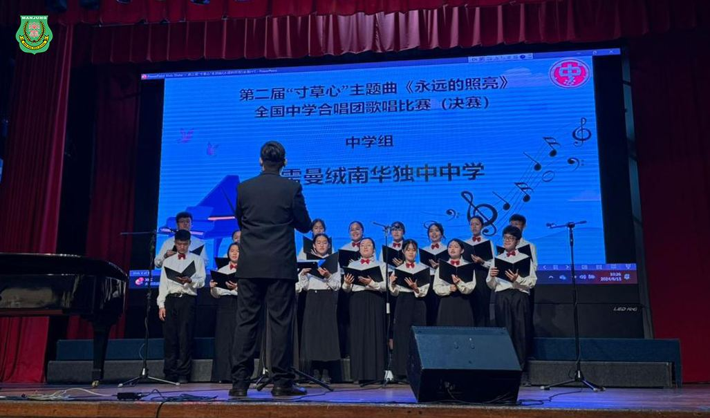
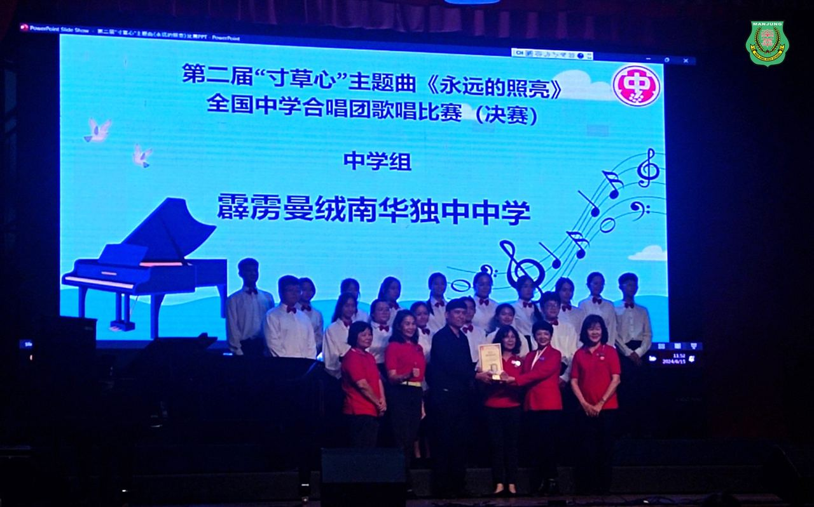
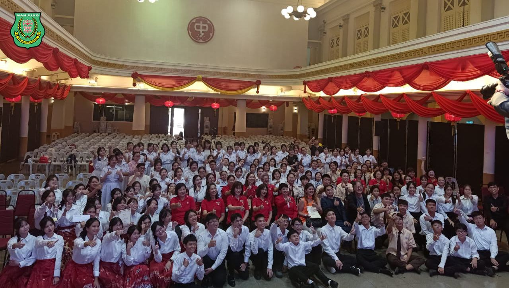
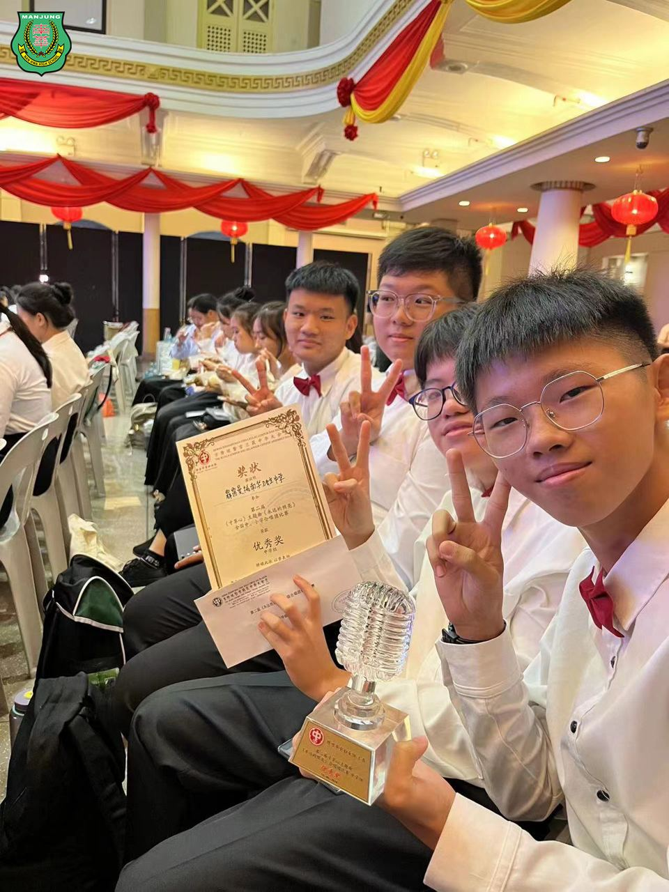
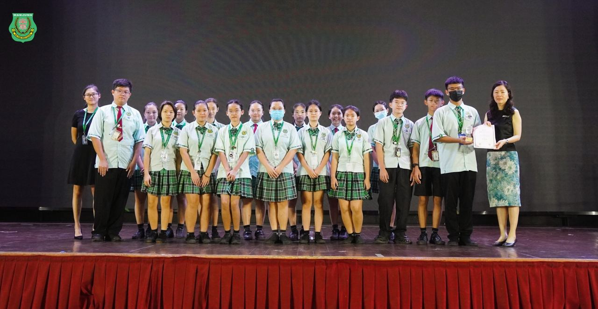

南华独中合唱团初战告捷
南华独中合唱团初战告捷
凭借《手印》传神歌颂父母恩情
曼绒南华独中合唱团于日前参加由隆雪华堂妇女组主办的第二届《寸草心》主题曲《永远的照亮》全国中学合唱团歌唱比赛初赛中脱颖而出，出战决赛并斩获优秀奖。
决赛当天，参赛团队除了演唱由著名本地音乐人周金亮老师创作的指定曲目《永远的照亮》，还需演绎一首自选与亲情相关的歌曲。南华独中合唱团演绎温岚《手印》，歌词传达了父母在成长过程中给予的支持和陪伴，以及子女对父母的感激之情，象征着亲情的延续和承诺，在合唱团的深情演绎下，传神地歌颂了父母恩情的伟大。
南华独中音乐教师暨合唱团教练汤文翔老师表示，“我为南华独中合唱团的孩子们感到骄傲。这次比赛不仅是对我们合唱团的重要考验，更是一次宝贵的学习机会。孩子们经常牺牲课后时间，全神贯注投入准备，在比赛过程中更是展现了高度的团队精神和不懈的努力。他们对《手印》的深情演绎，正是源自于他们对家庭和父母的真挚情感，这让整个演出更加感人。”
南华独中校长陈丽冰博士表示，“本校的教育方针向来重视孩子们全方位培养，尤其是德育与美育经常相辅相成。合唱团不仅在比赛中展现了卓越的音乐才华，更重要的是，他们通过音乐传达了对父母的感恩之情。这次胜利是对他们辛勤付出的最佳回报，也希望他们能继续保持这种热情，前往更大的舞台，追求更高的艺术境界。”
#第二届 #寸草心 #永远的照亮 #合唱团
#南华独中 #曼绒 #实兆远




